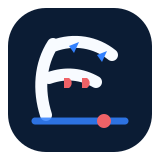
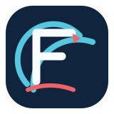

Vector
A single weather boundary bends into an F only after a second look. It has a memorable, ownable silhouette with cold-front blue and warm-front red used as real notation.
32PX◔◔◔ONE COLOR
- Ink
- #0B1C34
- Cold
- #3281FF
- Warm
- #EF6267
Frontline Forecast · Concept Lab · Round Two

A single weather boundary bends into an F only after a second look. It has a memorable, ownable silhouette with cold-front blue and warm-front red used as real notation.

A radar sweep meets a forward weather line. The F is held in negative space, giving it the clearest single-color application and a strong embroidered-patch character.
A clean path travels across a horizon, with front symbols folded into its movement. It is the warmest system and gives the public site an approachable forecast-first tone.
Lockup rule
The winning route should pass every item before it influences the live application palette. The navy/blue/red system remains consistent across all three, so we can select a mark without reopening the site-color decision.